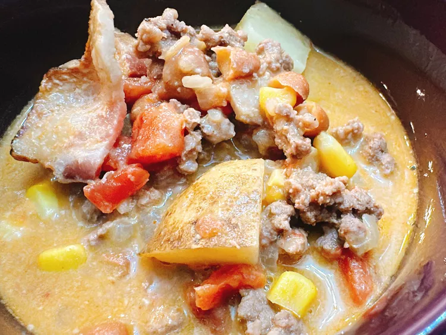

Cowboy Soup

Creamy cowboy soup is a hearty, rustic creamy soup with beef, bacon,
beans, and potatoes that is perfect for the start of “‘ber season.”
Cowboy soup is a hearty, flavorful dish often made with a variety of
ingredients like ground beef, beans, vegetables (such as corn, tomatoes,
and onions), and spices. It's a comforting, filling soup that combines
protein, fiber, and vegetables in a rich broth. Sometimes it’s enhanced
with ingredients like potatoes, chili, or cheese. This dish is perfect for
a filling meal, especially on colder days, and is a favorite for
gatherings or family dinners.
Ingredients
- 3 slices bacon
- 2 tablespoons butter
- 2 tablespoons all-purpose flour
- 3/4 cup evaporated milk
- 1 tablespoon olive oil
- 1 onion, diced
- 1 pound ground beef
- 1 (10 ounce) can diced tomatoes with green chilies
- 1 (15 ounce) can ranch style beans
- 1 (15 ounce) can corn
- 2 cups beef broth
- 2 potatoes, diced
- 3/4 teaspoon granulated garlic
- 1/2 teaspoon ground cumin
- Salt and freshly ground black pepper to taste
Steps
- Cook the bacon in a large pot over medium heat until crispy. Remove, crumble, and set aside.
- In the same pot, add butter and olive oil. Heat over medium heat until melted.
- Add diced onion and cook until softened, about 5 minutes.
- Add ground beef and cook until browned, breaking it apart as it cooks.
- Add the flour and stir to combine, cooking for 1-2 minutes to eliminate the raw flour taste.
- Stir in the evaporated milk, diced tomatoes with green chilies, ranch style beans, corn, and beef broth.
- Add diced potatoes, granulated garlic, cumin, salt, and pepper. Stir well to combine.
- Bring the soup to a boil, then reduce the heat and let it simmer for 20-30 minutes until the potatoes are tender.
- Once the potatoes are cooked, adjust seasoning to taste and serve the soup hot, topped with crumbled bacon.
Home